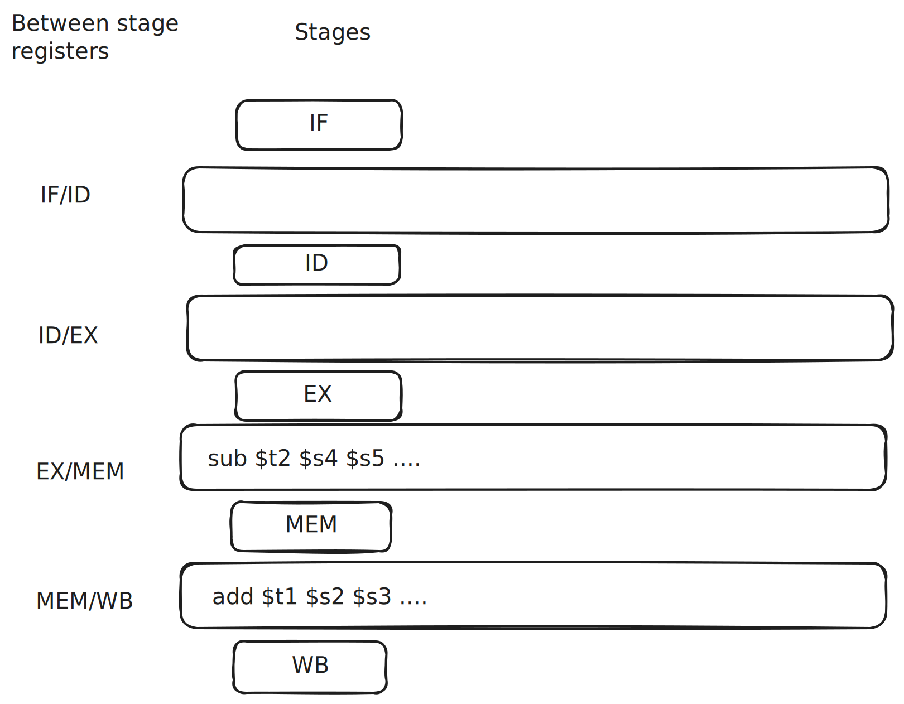

I want to share I’ve learned about CPU pipelining.
Thanks to Dan Luu’s branch prediction write-up
I was vaguely aware how this worked conceptually,
but I was motivated to divide into the details after reading
Rodrigo Copetti’s Playstation MIPS write-up
where he talked the need for
branch delay slots and how later CPUs used this to as an advantage
with branch prediction. I quickly found many subtle and
fasincating details on CPU pipelining that I had to share.
For more details, I recommend
chapter 4 of Computer Organization and Design.
This post will assume you are familiar with the laundry
or “assembly-line” model of CPU pipelining, but are hazy on some of the
lower-level details. It will also help to have a vague idea of
the 5-stage MIPS pipeline.
Let’s start by visualizing a basic CPU model that does not have pipelining
(aka a single-cycle CPU design):
One bottleneck is that each individual component of the pipeline
is inactive while the instruction is actively being processed in
another stage.
Pipelined CPUs fill in these vacancies by running instructions
through the stages one after the other, rather than waiting
for a single instruction to finish.
This seems pretty natural: it’s like an multiple person assembly line.
But there are some subtle implementation details
that sets the stage to solve more complicated problems.
Instruction Decoding
Instruction decoding orchestrates the entire pipeline
by providing reference fields used the remaining stages.
Let’s work through an example. Say the instruction is
add $t1, $s2, $s3
The IF stage fetches the instruction and puts it into
the ID stage register. Now the ID register contains
fields that will be used by all the remaining stages.
pc: 0x014b4820
->
Field op rs rt rd shamt funct
Binary 000000 01010 01011 01001 00000 100000
# add $s2 $s3 $t1
- EX will use
op, rs, and rt for the ALU
operation and inputs
- MEM (for
lw and sw) uses rt
- WB will write to register
rd

With pipelining, we have a problem.
Look at cycle 3 above: add moves into EX and sub moves into ID.
But WB needs to know the rd of the add instruction!
That field used to be safely in the ID register, but sub overwrote it.
The solution is to have registers between each pipeline stage
that carry fields from the ID stage (and data from other stages).

Now when add reaches WB, it has the rd field so it
can write to the correct register!